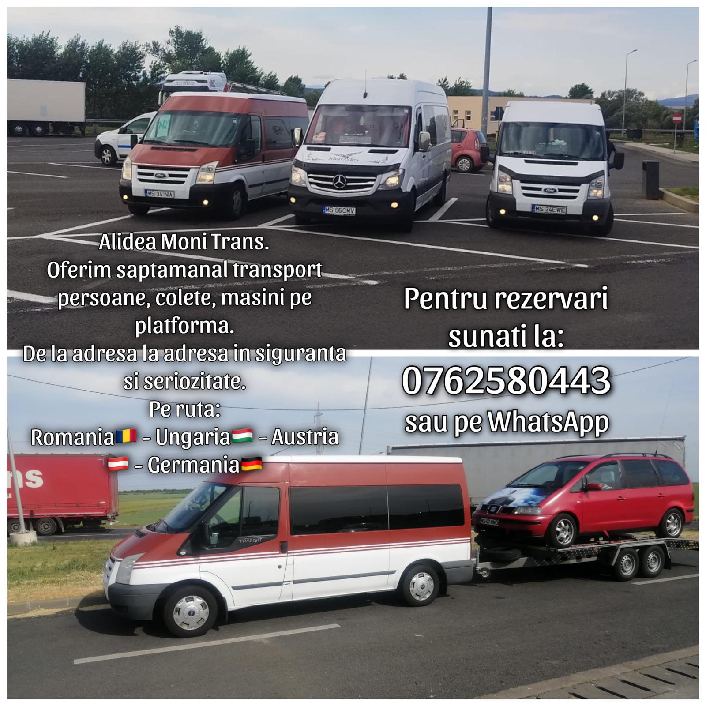

Inapoi
×
Acasa
Despre
Contacteaza-ne
☰ Meniu
Alidea Moni Trans
se ocupa cu
transport persoane, colete si masini pe platforma.
De la adresa la adresa in siguranta si cu seriozitate.
PE RUTA:
Romania, Ungaria, Austria, Germania

×